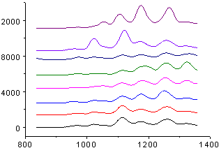

Gestapelte Linien mit Y-Versätzen
StackLineYOffset-Graph
- 
Datenanforderungen
Wählen Sie mindestens eine Y-Spalte aus (oder einen Bereich aus mindestens einer Y-Spalte). Idealerweise wählen Sie mindestens zwei Y-Spalten aus (oder einen Bereich aus mindestens zwei Y-Spalten). Wenn es eine verbundene X-Spalte gibt, stellt die X-Spalte die X-Werte bereit; ansonsten wird ein Abtastintervall der Y-Spalte oder Zeilennummer verwendet.
Diagramm erstellen
Wählen Sie die gewünschten Daten aus.
Wählen Sie .
oder
Klicken Sie auf die Schaltfläche Linien mit Y-Versatz in der Symbolleiste 2D Grafiken.
Vorlage
OFFSETSTACKY.OTP (im Origin-Programmordner installiert)
Notizen
- Standardmäßig verwendet ein Liniendiagramm mit Y-Versatz den Diagrammversatztyp Individuell. Jeder Datenzeichnung wird eine eigene individuelle Versatzeinstellung zugewiesen, die ganz einfach im Dialog Details Zeichnung modifiziert werden kann
- Mit dieser Versatzfunktion können die Abstände zwischen den Kurven angepasst werden, um die ursprünglichen Daten nicht mehr ändern zu müssen. Die Verwendung dieser Funktion verhindert, dass die Kurven sich überlappen, und stellt sicher, dass jede Kurve deutlich angezeigt wird.
- Das Diagramm kann an das Zeichnen von Untergruppen der Datensätze angepasst werden. Lesen Sie die Erläuterung zur Registerkarte Stapeln des Dialogs Details Zeichnung.
- Wenn es eine binäre Y-Spalte im Quelldatensatz gibt, wird die binäre Spaltenkurve skaliert, damit alle gestapelten Kurven auf der gleichen Skala sind. Origin findet die Y-Wertbereiche für alle Zeichnungen, die nicht binär sind, und verwendet den Durchschnitt dieser Bereiche, um die binären Spaltendaten zu skalieren.
- Hinweis: Die Systemvariable @SBD wird auch verwendet, um die binäre Stufenhöhe zu steuern. Der Standardwert ist 60. Er bedeutet 60 % des durchschnittlichen Y-Bereichs der anderen nicht-binären Zeichnungen.